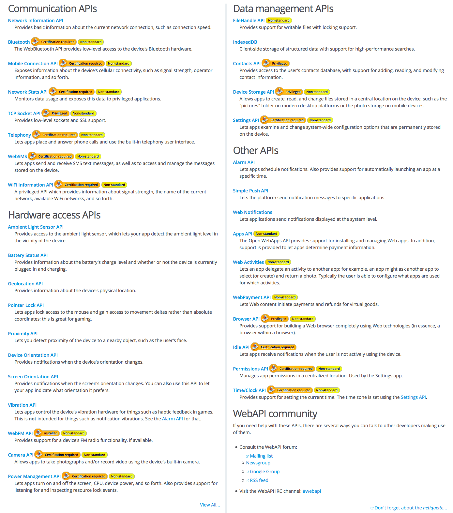
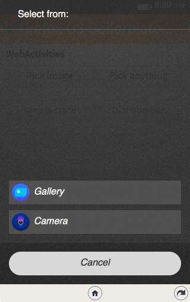
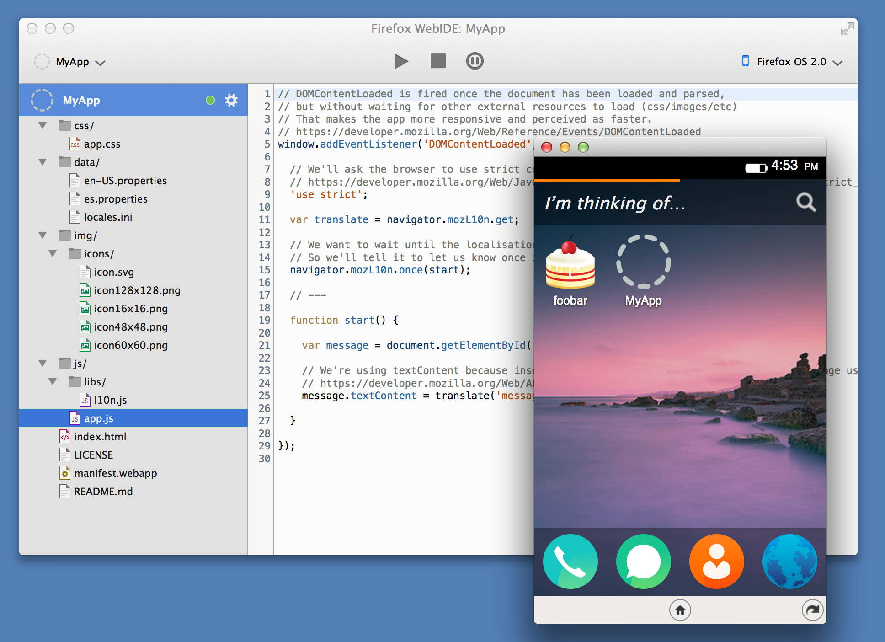
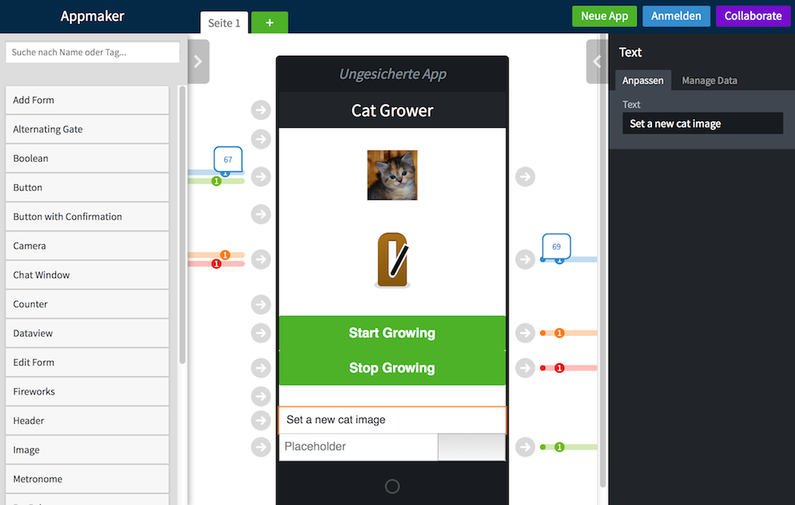
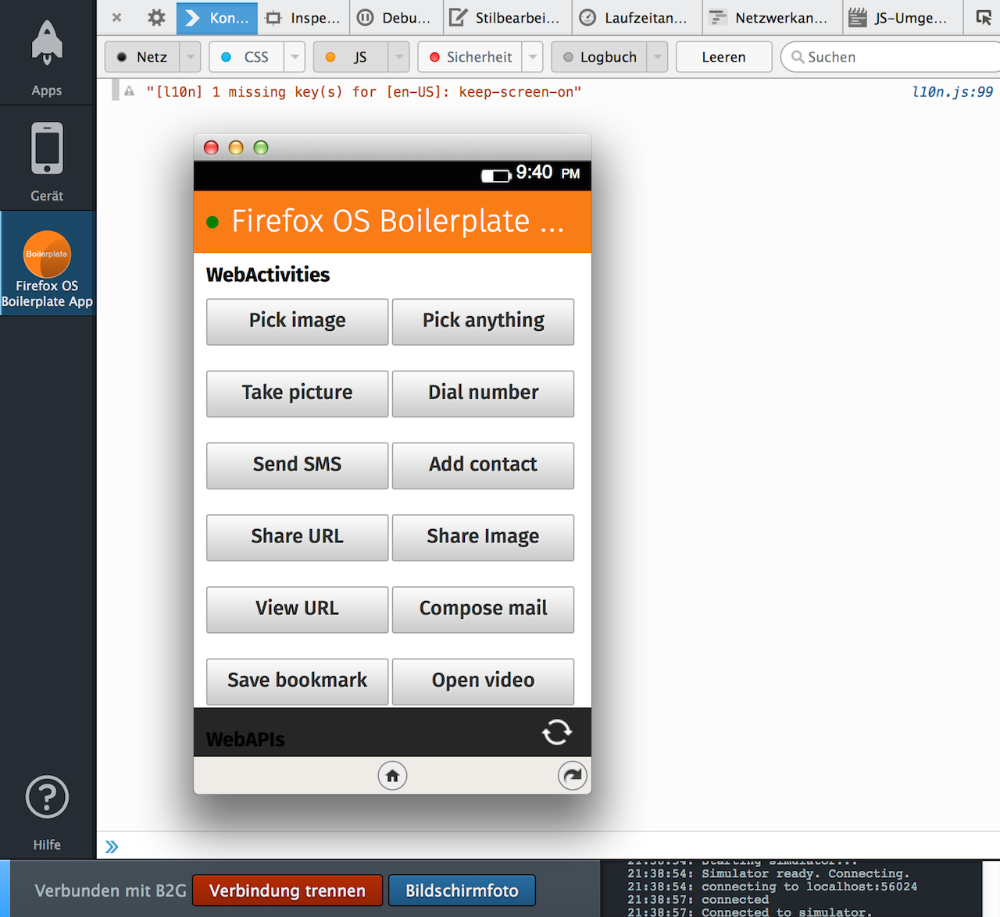
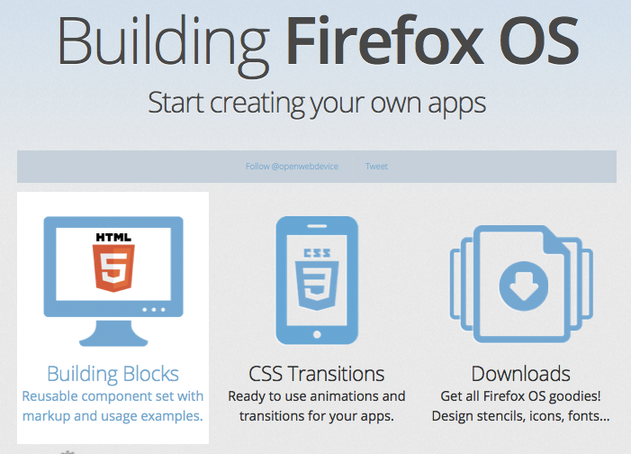
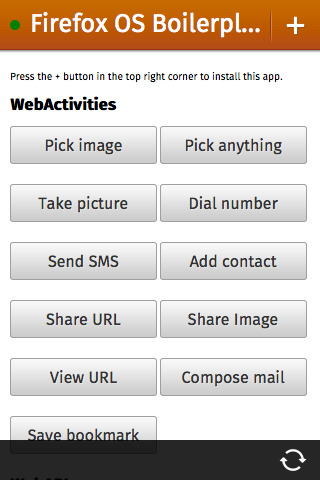
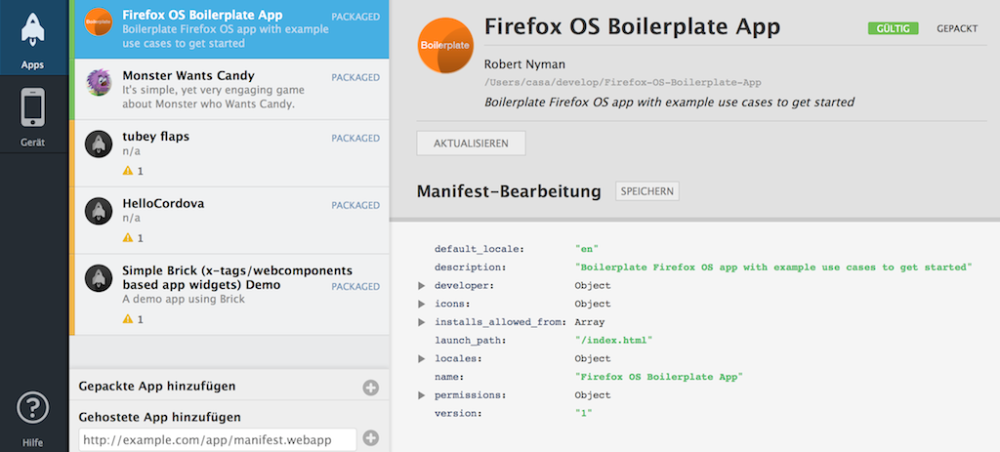

Firefox OS
a (mobile) web developers dream

Carsten Sandtner (@casarock) 2014 - DWX 2014
Who am I?
Carsten Sandtner
Head of Development at //mediaman GmbH
Mozilla representative
Javascript enthusiast and web developer since 1998.
HTML5 based
Operating Systems
The full Safari engine is inside of iPhone. And so, you can write amazing Web 2.0 and Ajax apps that look exactly and behave exactly like apps on the iPhone. And these apps can integrate perfectly with iPhone services. They can make a call, they can send an email, they can look up a location on Google Maps. And guess what? There’s no SDK that you need!
WebOS
Chrome OS
in detail
Architecture

Gonk
Low level OS of Firefox OS. Linux - based on Android Open Source Project
Gecko
Gaia
UI level of Firefox OS
Only interface to the underlying operating system and hardware
Web APIs and Web activities
Apps and 3rd party apps
Every HTML5, Javascript, CSS based Apps for Firefox OS
Using WebAPIs and Web Activities
App Development
Open Web Apps
3 different App types
Hosted Apps
Privileged Apps
Certified Apps
The Web App Manifest
Example (minimal)
{
"name": "My Awesome App",
"description": "My elevator pitch goes here",
"launch_path": "/somedir/index.html",
"icons": {
"128": "/img/icon-128.png"
},
"developer": {
"name": "Your Name",
"url": "http://your-homepage-here.tld"
},
"default_locale": "en"
}
Example Privileged app
{
"name": "My Awesome Privileged App",
....
"type": "privileged",
"fullscreen": "true",
"permissions": {
"contacts": {
"description": "Required for autocompletion in the share screen",
"access": "readcreate"
}
},
"default_locale": "en",
...
}
Web APIs
Open API specifications to access the hardware of devices
Created with and submitted to standards bodies and other browser makers
Web APIs: hosted Apps
- Vibration API
- Screen Orientation
- Geolocation API
- Mouse Lock API
- Open WebApps
- Network Information API
- Battery Status API
- Alarm API
- Push Notifications API
- WebFM API / FMRadio
- WebPayment
- IndexedDB
- Ambient light sensor
- Proximity sensor
- Notification
Web APIs: privileged Apps
- Device Storage API
- Browser API
- TCP Socket API
- Contacts API
- systemXHR
Web APIs: certified Apps
- WebTelephony
- WebSMS
- Idle API
- Settings API
- Power Management API
- Mobile Connection API
- WiFi Information API
- WebBluetooth
- Permissions API
- Network Stats API
- Camera API
- Time/Clock API
- Attention screen
- Voicemail
Example: Battery API
var battery = navigator.battery ||
navigator.mozBattery ||
navigator.webkitBattery,
info = {
charging: battery.charging,
chargingTime: parseInt(battery.chargingTime / 60, 10),
dischargingTime: parseInt(battery.dischargingTime / 60, 10),
level: Math.round(battery.level * 100)
};
Example: Battery API - cont.
APIs are event driven!
var battery = navigator.battery ||
navigator.mozBattery ||
navigator.webkitBattery;
function updateBatteryStatus() {
console.log("Battery status: " + battery.level * 100 + " %");
if (battery.charging) {
console.log("Battery is charging");
}
}
battery.addEventListener("chargingchange", updateBatteryStatus);
battery.addEventListener("levelchange", updateBatteryStatus);
updateBatteryStatus();
Example: Geolocation API*
navigator.geolocation.getCurrentPosition(handleLocation);
function handleLocation(position) {
var latitude = position.coords.latitude;
var longitude = position.coords.longitude;
}
// Or watch the current position...
var watchID = navigator.geolocation.watchPosition(function(position) {
handlePostion(position.coords.latitude, position.coords.longitude);
});
Example: Vibration API
var pattern = [200, 100, 200, 200, 100],
goodVibration = navigator.vibrate(pattern);
Example: Notification API
Needs permissions granted by users! (e.g. webapp.manifest)
"permissions": {
"desktop-notification": {
"description": "Allows to display notifications on the user's desktop."
}
}
// At first, let's check if we have permission for notification
// If not, let's ask for it
if (Notification && Notification.permission !== "granted") {
Notification.requestPermission(function (status) {
if (Notification.permission !== status) {
Notification.permission = status;
}
});
}
if (Notification && Notification.permission === "granted") {
var n = new Notification("Hi!");
}
Example: Connection API
Get information about current connection
var connection = navigator.connection ||
navigator.webkitConnection ||
navigator.mozConnection;
function updateConnectionStatus() {
console.log("Connection changed");
console.log("Bandwidth: " + connection.bandwidth);
console.log("Metered: " + connection.metered);
}
connection.onchange = updateConnectionStatus;
Example: Ambientlight
Get current Lux of ambient light
window.ondevicelight = function (event) {
// Read out the lux value
var lux = event.value;
};
Example: Contacts API
Read/Write/Delete Contacts - Permission required!
"permissions": {
"contacts":{
"description": "Contacts permissions is required to write contact from Google to your Firefox OS phone",
"access": "readwrite" }
}
}
var contactData = {
givenName: ["John"],
familyName: ["Doe"]
};
var person = new mozContact(contactData);
// save the new contact
var saving = navigator.mozContacts.save(person);
saving.onsuccess = function() {
console.log('new contact saved');
};
saving.onerror = function(err) {
console.error(err);
};
Example: Device Storage API
Save/Read from sdcard, photo, music, video ...
"permissions": {
"device-storage:pictures":{ "access": "readwrite" },
"device-storage:sdcard":{ "access": "readwrite" }
}
var sdcard = navigator.getDeviceStorage("sdcard"),
file = new Blob(["This is a text file."], {type: "text/plain"}),
request = sdcard.addNamed(file, "my-file.txt");
request.onsuccess = function () {...}
request.onerror = function () {...}
var pics = navigator.getDeviceStorage('pictures');
// browse all the images available
var cursor = pics.enumerate();
cursor.onsuccess = function () {
var file = this.result;
console.log("File found: " + file.name);
// check if there is other results
if (!this.done) {
// Then we move to the next result, which call the cursor
// success with the next file as result.
this.continue();
}
}
And there are many more!
Web Activities
Web activities
- configure
- costcontrol
- dial
- open
- pick
- record
- save-bookmark
- share
- view
- update
new: f.e type: “websms/sms” or “webcontacts/contact”
Example: Dial a number
var call = new MozActivity({
name: "dial",
data: {
number: "+49123456789"
}
});
Invokes "native" Dialer app
Example: Open an URL
var openURL = new MozActivity({
name: "view",
data: {
type: "url", // Possibly text/html in future versions
url: "http://www.developer-week.de/"
}
});
Invokes "native" browser
Example: Send a SMS
var sms = new MozActivity({
name: "new",
data: {
type: "websms/sms",
number: "+49987654321"
}
});
Invokes "native" messaging app
Example: Pick an image
var getphoto = new MozActivity({
name: "pick",
data: {
type: ["image/png",
"image/jpg",
"image/jpeg"]
}
});
Result
Example: Pick an image - cont.
getphoto.onsuccess = function() {
var img = document.createElement("img");
if (this.result.blob.type.indexOf("image") != -1) {
img.src = window.URL.createObjectURL(this.result.blob);
}
};
getphoto.onerror = function() { // error
};
Register an app as activity handler
{
// Other App Manifest related stuff
// Activity registration
"activities": {
"pick": {
"href": "./pick.html",
"disposition": "inline",
"filters": {
"type": ["image/*", "image/jpeg", "image/png"]
},
"returnValue": true
}
}
}
Handle an activity
navigator.mozSetMessageHandler('activity', function(activityRequest) {
var option = activityRequest.source;
if (option.name === "pick") {
// Do something to handle the activity
// Send back the result
if(picture) {
activityRequest.postResult(picture);
} else {
activityRequest.postError("Unable to provide a picture");
}
}
});
Tools&Utils
Testing
- Simulator
- Browser - It's a Web App!
Development
- No SDK!
- Use your favorite IDE/Editor
- It's HTML5!
- WebIDE!
WebIDE
Rapid Application Development
use Mozillas Appmaker
Debugging
Debugging - simulator
- Developer tools in Firefox! (NOT! Firebug)
- Remote Debugger!
Debugging - remote
- Connect your device
- Debug!
- That's all
UI Components
 http://buildingfirefoxos.com/UI Components - Brick!
 http://mozilla.github.io/brick/
http://mozilla.github.io/brick/
Firefox OS Boilerplate
https://github.com/robnyman/Firefox-OS-Boilerplate-App
Phonegap and Cordova

http://build.phonegap.com/
http://cordova.apache.org/
How to distribute your App
Hosted App
- Host the App on your web space
- Provide installation using WebAPI
Hosted App distribution
Check if app is already installed
var request = navigator.mozApps.checkInstalled(manifestPath);
request.onerror = function() {
console.log('Error checking for installed app: ', request.error.name);
};
request.onsuccess = function() {
// If the app is installed, you'll get a mozApp object in `request.result`,
// else `request.result` is null
console.log("Could be installed: ", request.result !== null ? "is installed" : "is not installed");
};
Hosted App distribution
Install your app
var installRequest = navigator.mozApps.install(manifestPath);
installRequest.onsuccess = function() {
// No error
console.log("App installed");
};
installRequest.onerror = function() {
console.log('Error installing the app: ', installRequest.error.name);
};
Done. Cool, eh?
Works on Firefox Android, too.
Privileged App
Distribute via Firefox OS Marketplace

Privileged app distribution
Validate using App-Manager
Upload ZIP of your app to marketplace.
Wait for approval. Done.
Thank you!
Carsten Sandtner
@casarock